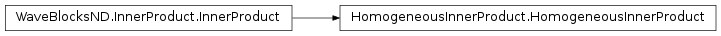
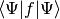
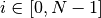
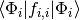

HomogeneousInnerProduct¶
About the HomogeneousInnerProduct class¶
The WaveBlocks Project
@author: R. Bourquin @copyright: Copyright (C) 2010, 2011, 2012, 2013, 2014, 2015, 2016 R. Bourquin @license: Modified BSD License
Inheritance diagram¶
Class documentation¶
-
class
WaveBlocksND.HomogeneousInnerProduct(delegate=None)[source]¶ -
__init__(delegate=None)[source]¶ This class computes the homogeneous inner product .
Parameters: delegate (A Quadraturesubclass instance.) – The delegate inner product.
-
build_matrix(packet, operator=None, eval_at_once=False)[source]¶ Delegates the computation of the matrix elements for a general function
 with
with  .
The matrix is computed without including the coefficients
.
The matrix is computed without including the coefficients  .
.Parameters: - packet – The wavepacket
 .
. - operator – A matrix-valued function
 .
. - eval_at_once (Boolean, default is
False.) – Flag to tell whether the operator supports theentry=(r,c)call syntax.
Returns: A square matrix of size
 .
.- packet – The wavepacket
-
get_delegate()¶ Return the
Quadraturesubclass instance used for evaluation of this inner product.Returns: The current instance of the quadrature.
-
get_description()[source]¶ Return a description of this inner product object. A description is a
dictcontaining all key-value pairs necessary to reconstruct the current instance. A description never contains any data.
-
quadrature(packet, operator=None, summed=False, component=None, diag_component=None, diagonal=False, eval_at_once=False)[source]¶ Delegates the evaluation of for a general function
with .Parameters: - packet – The wavepacket .
- operator – A matrix-valued function
 .
. - summed (Boolean, default is
False.) – Whether to sum up the individual integrals .
. - component – Request only the i-th component of the result. Remember that
![i \in [0, N^2-1]](../_images/math/c307955eaa84eea9bf13c5c5a9ff8fec24a763d5.png) .
. - diag_component – Request only the i-th component from the diagonal entries, here .
Note that
componenttakes precedence overdiag_componentif both are supplied. (Which is discouraged) - diagonal – Only return the diagonal elements .
This is useful for diagonal operators
 .
. - eval_at_once (Boolean, default is
False.) – Flag to tell whether the operator supports theentry=(r,c)call syntax.
Returns: The value of the braket . This is either a scalar value or a list of
 scalar elements depending on the value of
scalar elements depending on the value of summed.- packet – The wavepacket
-
set_delegate(delegate)¶ Set the
Quadraturesubclass instance used for quadrature.Parameters: delegate – The new Quadratureinstance.
-